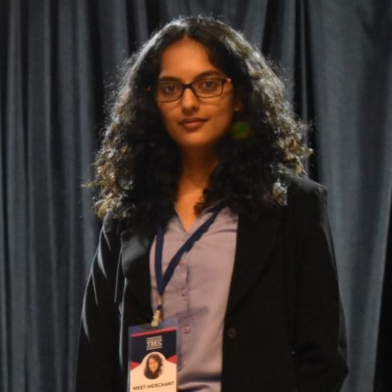

About Me
Let me tell you a few things...

BIO
I am an IT Engineer with an interest for everything. I like to work on and explore multiple technologies, like Web Development, OOP Java, and Machine Learning. I like to read and play the guitar in my free time. I'm never bored because there's always something to do!
Scroll down to read more about me!